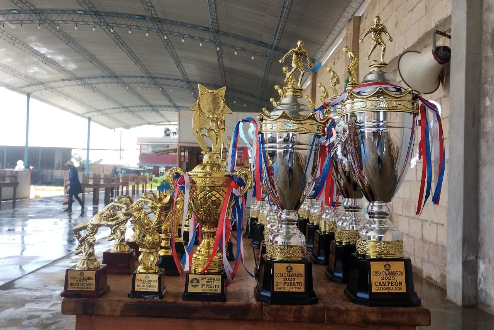
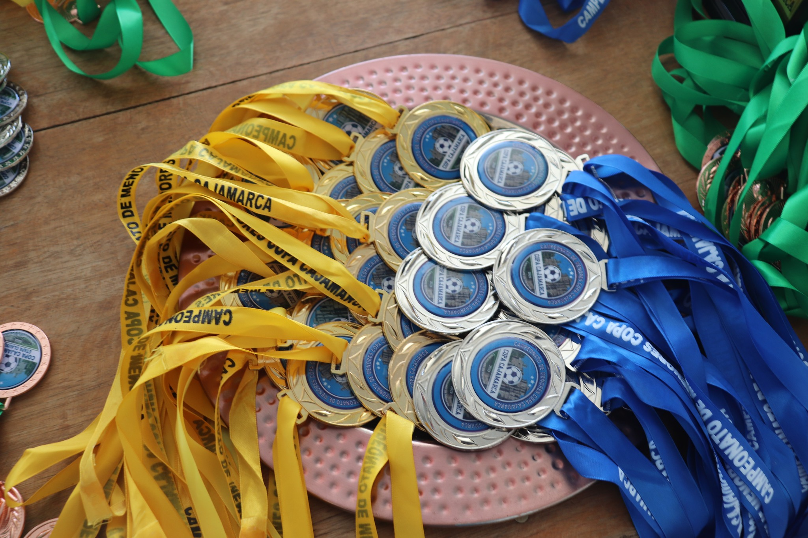
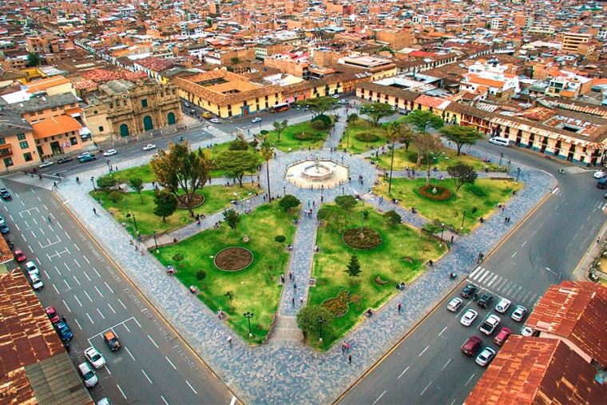

Temporada Actual · En Curso
Copa
Cajamarca — Campeonato de Menores de Fútbol en Cajamarca, Perú
Campeonato de Menores · Cajamarca, Perú



Temporada Actual · En Curso
Campeonato de Menores · Cajamarca, Perú
La Copa Cajamarca es el campeonato de fútbol de menores más importante y tecnológicamente avanzado de la región, con más de 30 academias compitiendo. Nuestros partidos se juegan en los mejores recintos de la ciudad, como El Golazo y Yecilu.
Somos pioneros en innovación deportiva en la región. Toda la gestión y logística del campeonato está respaldada por nuestra propia plataforma tecnológica de gestión, garantizando transparencia, orden y una experiencia de alto nivel para todas las academias participantes.
Vive la experiencia total: marcadores de partidos en vivo, tabla de posiciones automatizada y fixture dinámico desde tu celular. Para inscripciones, bases o reclamos, comunícate directo a la directiva vía WhatsApp al: 954 408 584.